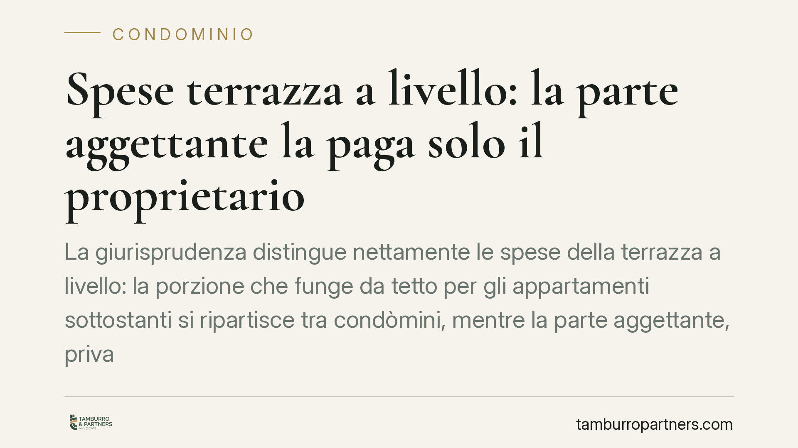

Spese terrazza a livello: la parte aggettante la paga solo il proprietario
La giurisprudenza distingue nettamente le spese della terrazza a livello: la porzione che funge da tetto per gli appartamenti sottostanti si ripartisce tra condòmini, mentre la parte aggettante, priva di funzione di copertura, grava interamente sul proprietario esclusivo. Una differenza che incide sul riparto e sulla legittimità delle delibere assembleari.

Il caso: due porzioni, due criteri di spesa
La terrazza a livello è un elemento ricorrente nei fabbricati moderni e una fonte frequente di contenzioso condominiale. Il punto nodale è capire chi paga quando occorre intervenire sulla struttura.
La risposta non è unica, perché la terrazza a livello può svolgere due funzioni diverse. Una parte copre gli appartamenti sottostanti, fungendo da vero e proprio tetto. Un'altra parte, invece, "aggetta" (sporge) oltre il perimetro degli immobili coperti e non svolge alcuna funzione di copertura: è un semplice prolungamento in uso esclusivo al proprietario.
Questa scomposizione impone due criteri di riparto distinti, a seconda della funzione che ciascuna porzione concretamente assolve.
Inquadramento normativo
Il riferimento centrale è l'art. 1126 c.c., dettato per i lastrici solari e le terrazze a uso esclusivo. La norma prevede che chi ha l'uso esclusivo sopporti un terzo della spesa di riparazione o ricostruzione, mentre i due terzi restanti gravano su tutti i condòmini dell'edificio (o della porzione) ai quali il lastrico o la terrazza serve da copertura, in proporzione ai millesimi.
Il fondamento di questo riparto è stato chiarito dalle Sezioni Unite della Cassazione con la sentenza n. 3672/1997, che ha affermato il cosiddetto *criterio funzionale*: la terrazza a livello va trattata, quanto alle spese, in modo analogo al lastrico solare perché assolve la medesima funzione di copertura. È quindi la funzione concreta della superficie, e non la sua collocazione geometrica, a determinare il regime di spesa.
Da qui la conseguenza logica, confermata dall'orientamento della giurisprudenza di legittimità: dove la terrazza non copre nulla - come nella parte aggettante - viene meno il presupposto stesso dell'art. 1126 c.c. Non esistendo alcuno che riceva protezione da quella porzione, non c'è ragione per far concorrere i condòmini alla spesa, che resta integralmente a carico del proprietario esclusivo.
Implicazioni pratiche
Per il proprietario dell'ultimo piano la distinzione pesa in modo tangibile:
- sulla porzione-copertura paga un terzo, con i due terzi distribuiti tra i proprietari sottostanti protetti;
- sulla porzione aggettante paga il cento per cento, senza alcun concorso del condominio.
Per i condòmini dei piani inferiori, invece, è decisivo pretendere che la spesa deliberata riguardi solo l'area che effettivamente li copre. Far rientrare nel riparto condominiale anche la parte aggettante significherebbe pagare per un bene che non svolge funzione alcuna a loro vantaggio.
Per l'amministratore, la corretta individuazione delle due porzioni è presupposto della validità della delibera di spesa. Un riparto che ignori la distinzione espone la decisione assembleare a impugnazione.
Su quest'ultimo punto occorre ricordare l'art. 1137 c.c.: la delibera può essere impugnata entro trenta giorni, ma il *dies a quo* (il giorno da cui decorre il termine) cambia a seconda della posizione del condòmino. Per i dissenzienti e gli astenuti il termine decorre dalla data della deliberazione; per gli assenti decorre dalla data in cui ricevono la comunicazione del verbale.
Cosa fare in concreto
- Accertate la funzione reale di ogni porzione. Prima di deliberare, acquisite una relazione tecnica che individui con precisione quale parte copre gli appartamenti e quale aggetta.
- Separate le voci di spesa in computo metrico. Distinguete i costi riferibili alla parte-copertura (riparto ex art. 1126 c.c.) da quelli della parte aggettante (a carico esclusivo del proprietario).
- Verificate la correttezza del riparto in delibera. Controllate che la tabella non addebiti ai condòmini sottostanti quote relative all'area aggettante.
- Rispettate il termine di impugnazione. Se intendete contestare la delibera, agite entro trenta giorni, calcolando il decorso in base alla vostra posizione (dissenziente, astenuto o assente) ai sensi dell'art. 1137 c.c.
- Documentate tutto per iscritto. Conservate verbali, relazioni tecniche e comunicazioni: sono la base per difendere o contestare il riparto.
In sintesi
La terrazza a livello non è un bene monolitico ai fini delle spese. Dove copre, vale la ripartizione dell'art. 1126 c.c.; dove si limita a sporgere, paga solo chi ne ha l'uso esclusivo. Consigliamo di affrontare ogni intervento partendo da questa distinzione tecnica, che è la vera chiave per prevenire contenziosi.
---
*Contributo informativo a cura di Tamburro & Partners - Avv. Giuseppe Tamburro. Non costituisce parere legale.*
Ogni condominio ha una storia a sé.
Se gestisci un'amministrazione e vuoi un confronto su una specifica questione condominiale, scrivi allo studio. Ti rispondiamo entro un giorno lavorativo.